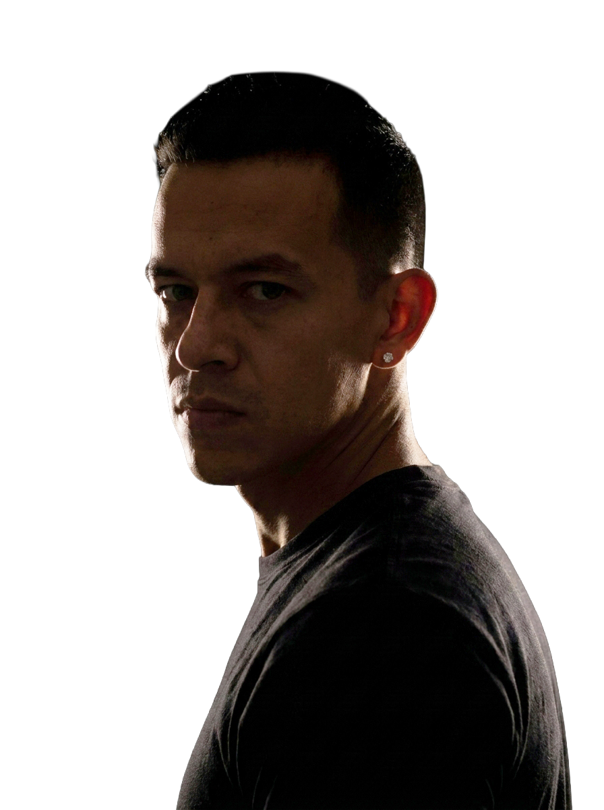

.jpeg)
.jpg)
.png)
.jpeg)
.jpg)
.jpeg)
.jpg)
.jpg)
.jpg)
.jpg)
.jpg)
.jpg)
Cuatro años de disciplina, técnica y descubrimiento artístico. Donde aprendí que cada movimiento cuenta una historia.
Sobre Mí
Del escenario al navegador
Diseñador & Desarrollador Web — Creando experiencias que respiran, fluyen y conectan
Scroll

Durante años, mi escenario fue el teatro.
Como Licenciado en Danza Contemporánea, aprendí que cada movimiento cuenta una historia, que el ritmo define la emoción y que la precisión técnica es lo que separa un ensayo de una obra inolvidable.
Hoy cambio el escenario por el navegador, pero la esencia sigue intacta: tu sitio web no debe ser un documento estático. Debe respirar, fluir y conectar.
En un mundo digital saturado de plantillas genéricas y diseños que se ven todos iguales, me niego a ser parte del ruido. Mi filosofía es inquebrantable: cada proyecto, sin importar su tamaño, recibe el mismo nivel de exigencia, investigación y pulido milimétrico que una producción para un cliente VIP.
Las animaciones que diseño son parte de la narrativa. La velocidad de carga no es un lujo, es respeto por tu usuario. El diseño no es solo estética, es estrategia pura.

¿Por qué soy diferente?
Porque entiendo la experiencia humana. Mi trayectoria no es la típica ruta de un programador, y esa es mi mayor ventaja.
Haber coordinado eventos de alto nivel, atendido a clientes exclusivos en entornos VIP y dirigido grupos de personas me enseñó algo que ningún curso de código puede enseñar: la empatía y la obsesión por el detalle.
Sé cómo guiar la mirada del usuario (como guío a un público en un teatro). Sé cómo anticiparme a los problemas antes de que ocurran. Y sé que la tecnología debe estar al servicio de las personas, no al revés.
Mi Trayectoria
Del arte al código — Una evolución natural
Palacio de las Vacas, Guadalajara. Una producción inmersiva basada en la Divina Comedia con más de 30 bailarines.
INFIERNO
2018Teatro Degollado. Compartir el escenario con pensadores y líderes en un evento de talla internacional.
TEDx
20181er Lugar Contemporáneo & 2do Lugar Jazz. La disciplina y el trabajo constante dan resultados.
Attitude
2018AGAVE Scenic Exchange. Remontaje de "Dusty Old Things" con la coreógrafa coreana Da Soul Chung.
Residencia
2019Cofundé una academia de danza virtual durante la pandemia. Marketing, coordinación y reclutamiento.
OnLiveMovnt
2020Atención a clientes exclusivos, coordinación de eventos y presentación de shows en vivo.
VIP Events
2023–2025Fusionando mi pasado artístico con mi futuro digital. Experiencias web que respiran, fluyen y conectan.
Web Dev
PresenteSi estás dando tus primeros pasos, si apenas estás viendo tu idea tomar forma, si a veces te despiertas a las 3 de la mañana preguntándote "¿de verdad fue buena idea?" quiero que sepas algo:
Tu proyecto no es "demasiado pequeño" para tener una web impactante.
El inicio es el momento más frágil y más importante de todos. Es ahí donde se define si tu marca va a ser recordada o ignorada.
Yo también he estado ahí: abriendo mis propias clases de forma virtual durante la pandemia, produciendo mis propias obras, invirtiendo cada peso y cada hora de sueño en algo que apenas nacía.
Por eso trabajo con la misma intensidad tanto con una gran empresa como con el emprendedor que está abriendo su primer negocio.
Tu pasión merece una web que la refleje. Tu visión merece una plataforma que la potencie. Tu sueño merece ser tratado como algo grande.
Porque lo es.